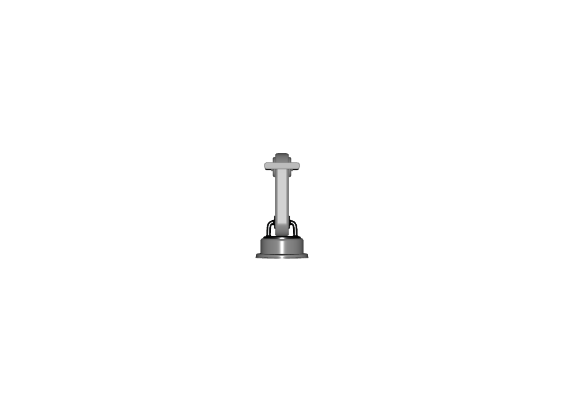

Feature: ID:001 - Minimal - Base#
Description#
The minimal placeable visual feature comprises a list of requirements that enable the digital representation of a real world object to be visualized in a broad range of applications.
It additionally provides a list of requirements to ensure that the scale, units and placement of the object may be correctly represented, so that the object can be placed and aggregated with other objects in a scene.
Neutral Format#
Version 0.1.0#
Details
Property |
Value |
|---|---|
Internal ID |
|
Used in Profiles#
This version is used in the following profiles:
Prop Robotics Neutral Profile (v0.1.0) - Used as the base editor support feature
Prop Robotics Physx Profile (v0.1.0) - Used as the base editor support feature with PhysX-aware tools
Requirements#
Capability: Core/Atomic_Asset
Requirements
-
AA.001 | version 0.1.0
-
AA.002 | version 0.1.0
-
Capability: Core/Units
Requirements
-
UN.001 | version 0.1.0
-
UN.002 | verison 0.1.0
-
UN.006 | version 0.1.0
-
UN.007 | version 0.1.0
-
Capability: Visualization/Geometry
Requirements
At-Least-One-Imageable-Geometry
VG.001 | version 0.1.0
Capability: Hierarchy
Requirements
-
HI.004 | Version 0.0.0
Description
Requirement that the current Usd Stage has a defaultPrim. Believe that this will help limit amount of errors for when we talk about assembly type features.
-
Pipelines Supported for this Feature#
Source file type:
.blend
Via Blender SimReady Add-ons
.mjcf
Via Blender SimReady Add-ons + MJCF2USD Tool
.step
Via Blender SimReady Add-ons + CAD Converter
Samples#
Test Process#
Obtain the usd sdk
Confirm your asset in question has passed validation
In your commandline type:
path/to/usdsdk/scripts/usdrecord <path to usdfile.usd> <path to output.png>
Open up path/to/output.png
Expected Result:
Confirm it is NOT empty or completely black
Example image:

Version 1.0.0#
Details
Requirements#
Capability: Core/Atomic_Asset
Requirements
-
AA.001 | version 0.1.0
-
AA.002 | version 0.1.0
-
Capability: Core/Units
Requirements
-
UN.006 | version 0.1.0
-
UN.007 | version 0.1.0
-
Capability: Visualization/Geometry
Requirements
-
VG.MESH.001 | version 0.1.0
-
VG.002 | version 0.1.0
Geometry-valid-mesh-topology.md
VG.014 | version 0.1.0
Geometry-correct-winding-order.md
VG.029 | version 0.1.0
-
VG.027 | version 0.1.0
-
VG.028 | version 0.1.0
-
VG.025 | version 0.1.0
For objects that sit on a ground plane, the pivot should be at the center of the object’s base.
For objects that rotate around a specific point (e.g., a robot arm joint, a hinged door), the pivot should be at the center of rotation.
For objects that are attached to other objects (e.g., a camera, a wheel), the pivot should be at the attachment point.
-
Capability: Hierarchy
Requirements
-
HI.001 - There shall be a single root prim as a common parent for assets’ hierarchy.
-
HI.004 | Version 0.0.0
Description
Requirement that the current Usd Stage has a defaultPrim. Believe that this will help limit amount of errors for when we talk about assembly type features.
-
HI.003 - The root prim of an individual, placeable asset file shall be an Xformable (i.e., a prim that inherits UsdGeomXformable, such as Xform). This allows the entire asset to be easily transformed when instanced into a larger scene.
-
Samples#
Test Process#
Runtime Validation with SimReady Testing Framework#
The Minimal Placeable Visual feature includes automated runtime tests using the SimReady Foundation testing framework. The tests verify:
Asset loads without warnings or errors (AA.002)
Proper camera framing of geometry (VG.002)
Correct transformation and positioning (HI.001, HI.003, HI.004)
Valid renderable geometry (VG.MESH.001, VG.027)
Correct winding order and normals (VG.028, VG.029)
Proper origin positioning (VG.025)
Prerequisites:
Configure runner info in
local_run/runners_info.tomlwith paths to Isaac Sim or Kit engineSee
local_run/runners_info_setup.mdfor setup instructions
Configuring Test Segments:
The runtime test is divided into segments that can be enabled/disabled in nv_core/testing_tools/test_definitions/kit_test/feature_vis_fet_001.toml:
S0: Presence check (verifies asset has visible geometry) - enabled by default
S1: Light response test (validates VG.027, VG.028, VG.029) - produces video
S2: Backface culling Z-axis test (validates VG.029 winding order) - produces videos
S3: Backface culling X-axis test (validates VG.029 winding order) - produces videos
S4: Pivot positioning test (validates VG.025 origin placement) - produces videos
S5: Normal direction test (validates VG.028 normals validity) - produces videos
To enable all segments, edit the [TestConfig] section in the TOML file:
[TestConfig]
# Enable all segments for full MPV validation
segments = "S0,S1,S2,S3,S4,S5"
Note: S0 only validates presence and does not produce video outputs. To get visual validation videos, enable S1-S5.
To run runtime tests:
Generate test batch for specific assets (Manual mode):
cd nv_core/testing_tools/testing_framework/source # Test a specific asset python batch_maker/batch_maker.py \ --project_root "C:\path\to\simready_foundation" \ --tests "feature_vis_fet_001" \ --manual_assets "sample_content/common_assets/props_general/my_asset/my_asset.usd"
Or generate tests for all conforming assets (uses search functions):
python batch_maker/batch_maker.py \ --project_root "C:\path\to\simready_foundation"
Execute tests locally:
python job_runner/job_runner.py "..\..\..\..\..\_testing\batch_jobs\local_test_windows.json"
Generate HTML report:
python report_generator/report_generator.py --output_dir "..\..\..\..\..\_testing"
View results: Open
_testing\index.htmlin a web browser
For detailed documentation, see nv_core/testing_tools/testing_framework/source/REPORT_USAGE.md